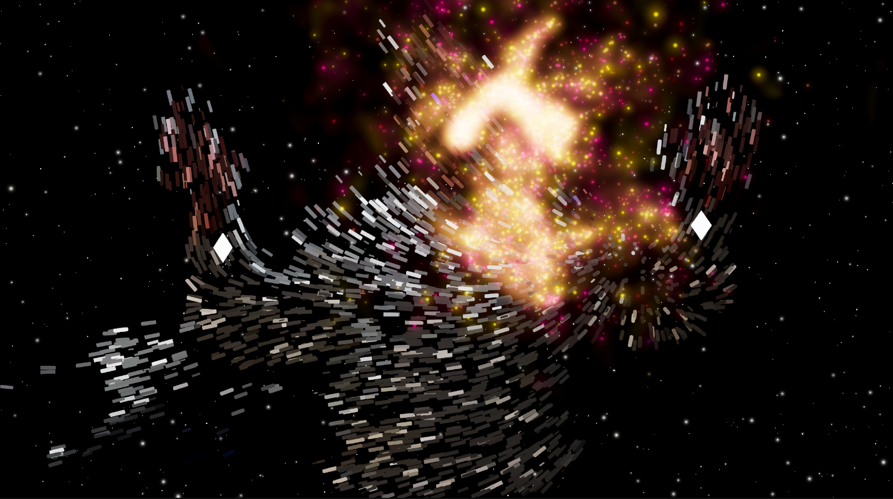
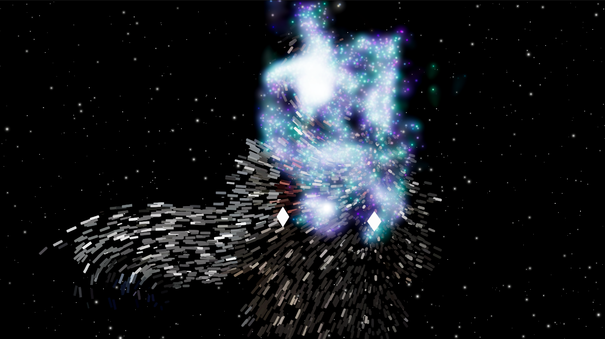
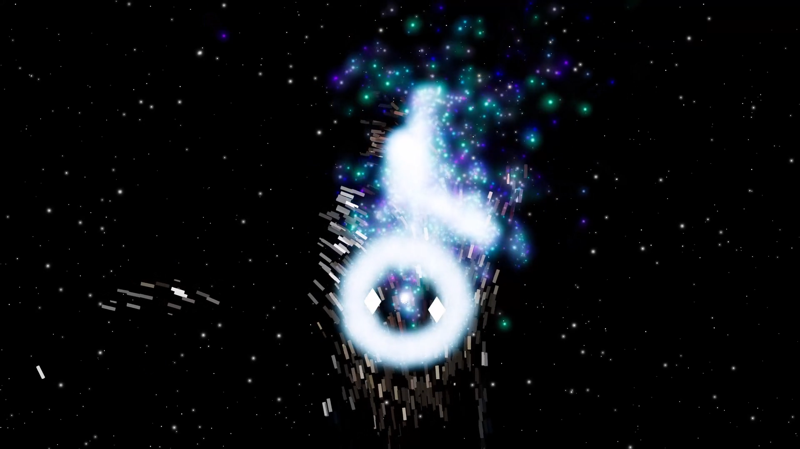
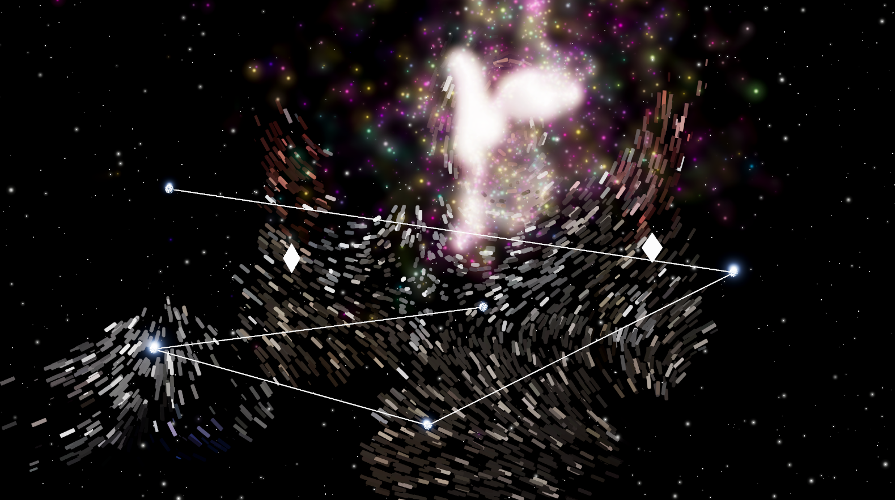

🔊Sound ON
Concept
身体動作と視聴覚の完全同期による、没入型「星」生成体験
自身の体を「星を生み出す装置」へと変えるインタラクティブ・インスタレーション。
顔の中心から湧き出るエネルギーを、両手を使って集め、凝縮し、解放する。
この一連の動作に対し、世界観に合わせた音を同期させることで、視覚情報以上の没入感を設計しました。
また、「蓄積→解放」というエネルギー循環のサイクルを体験に組み込むことで、何度でも試したくなるクリエイティビティを誘発します。
Experience Flow
体験の流れ

01 顔の中心からエネルギーが発生

02 両手の距離に応じて色が変化

03 音・衝撃波エフェクトと共に星が誕生

04 誕生した星々は順に繋がれ星座を描く
Technical Approach
AI(BodyPix)を用いた人物セグメンテーションとリアルタイムVFXを組み合わせたインタラクティブアート。「AIを使って何か面白い表現や体験を作りたい」という好奇心からスタートしました。
システムのベースには、高橋啓次郎氏の
NNCam2
を採用しています。特別なセンサーデバイスを装着せず、webカメラ1つで体験できる手軽さやコストの低さを重視したため、一般的な単眼カメラで動作するBodyPix(NNCam2)が最適だと判断しました。
既存のAIライブラリを単に利用するだけでなく、その内部構造やVFX連携の仕組みを解析し、自身の表現に合わせて拡張することで、AI推論から描画までの実践的なパイプライン構築を学びながら制作しました。
手の距離と連携したVFX表現
AI（BodyPix）から取得した両手のKeypointデータを、VFX Property Binderを介してVFX Graphへリアルタイムに送信しています。 VFX内部で両手間の距離を毎フレーム計算し、その距離の数値をもとにRemapを用いてTurbulenceの強度や抵抗値を動的に制御しました。また、極端な手の動きをしてもエフェクトが破綻しないよう、色彩の遷移にはLerpを活用し、滑らかなビジュアルの変化を実現しています。
インタラクションのデザインには「実際の星の温度と色の関係」をモチーフとして取り入れました。 ユーザーが手を広げている時は、エネルギーが拡散していく様子を表現するために、パーティクルを広範囲に散らし、低温を示す「オレンジ・黄」の色彩に。逆に両手を近づけた時は、エネルギーが一点に凝縮していく様子を表現するために、パーティクルが塊となってうねるような動きへ変化し、高温を示す「青・白」へと発光します。
手の距離に応じて動き・色が変化する様子
星雲のような流体的表現の追求
作品の世界観である「宇宙の神秘性」を強調するため、初期のよくある粒のパーティクル(デフォルト感)から脱却し、星雲やエネルギーを模したリッチな流体表現を目指しました。単なる点の集合体ではなく、エネルギーが1つの塊として有機的にうねるような表現にこだわっています。
リアルタイム描画において計算負荷の高い流体シミュレーションを避けるため、VFX Graphの機能を駆使した2つのアプローチで「疑似的な流体」を構築しました。結果として、開発環境(NVIDIA RTX 4060 / Unity Editor上)でも常時60FPS以上の安定した動作を実現しています。
コアとなる粒(Default-Particle)の背後にサイズを大きくしたソフトな円形テクスチャを加算して重ねることで、星から光があふれ出るようなブルーム感を表現しました。
Trigger Event / GPU Eventを用い、高速で動く親パーティクルの背後に、軌跡としての子パーティクル(残像)を連続発生させるシステムを実装しました。これにより、個々の粒の動きが塊として繋がり、計算負荷を抑えながらも流体的なモーションを実現しています。
特に手を近づけて青白くなった時に違いが分かりやすいと思います。
Step 0 ただの粒パーティクル
Step 1 ＋ソフトな円形テクスチャパーティクル
Step 2 ＋GPU Eventによる残像
没入感を深める視覚と聴覚の完全同期
体験の没入感を高めるため、映像と音が完全に連動するインタラクションを実装しました。特にエネルギーチャージ音では、手の距離に応じて滑らかにピッチが変化する挙動が必要だったため、既存の音声ファイルではなく数式を基にした音声合成を採用しています。
これによりメモリ負荷を抑えつつ、滑らかなピッチ変化を実現しました。生成AIを使用してC#スクリプト(OnAudioFilterRead)を実装し、視覚演出と完全に同期させています。スクリプト制御をAIで効率化することで、自身はVFXのクオリティアップに注力して作品全体の完成度を最大化しています。
※ページ上部の動画で、実際の音の変化を確認できます